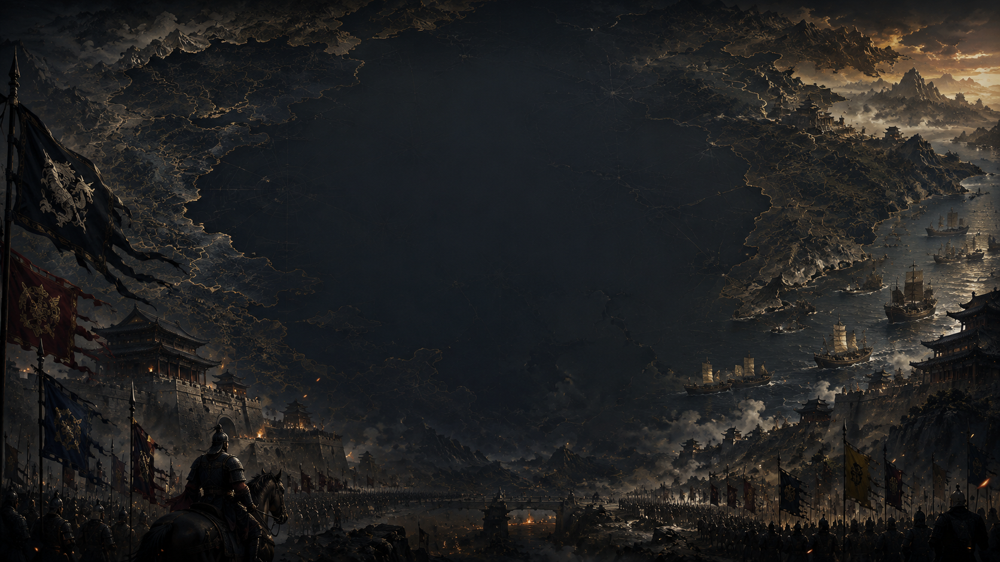
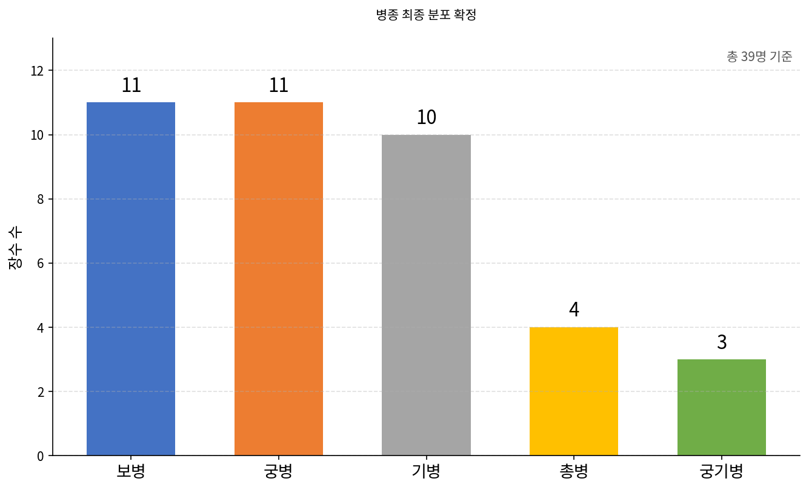
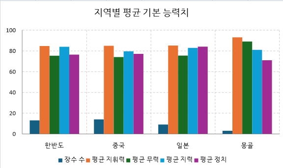
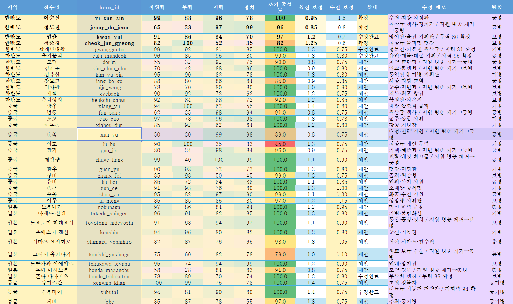
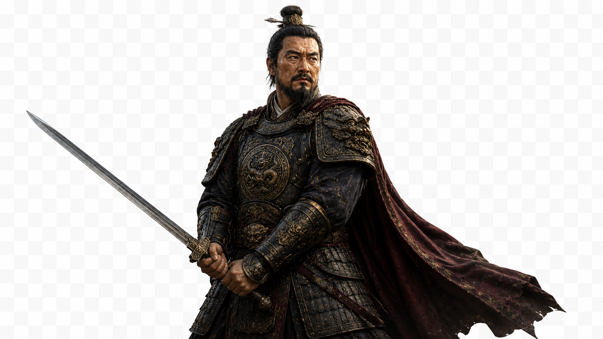
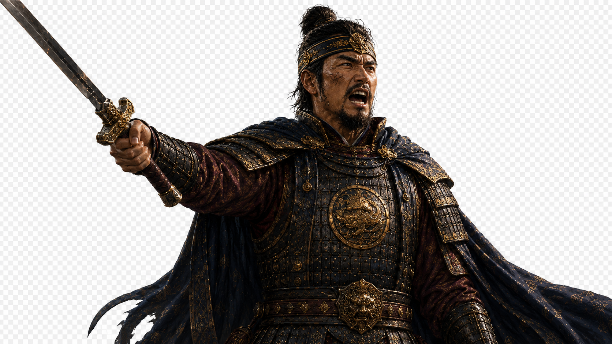

The Generals Start to Come Alive
Redesigning 39 Generals' Data, Roles, Unit Types, Unique Skills, and the Momentum System
July 28, 2026The Pipeline Took Another Step Forward
While wrapping up T02, a small side experiment happened — adding a background image to the start screen. The process looked completely different from before.
채코치Full process:
Kimjak uploaded the background image to GitHub.
I pulled the image and game files from GitHub into my own workspace. This didn't touch anything on Kimjak's computer.
I modified NewGameFactionSelect.tscn, the start screen blueprint.
채코치Added a TextureRect to display the background image
Set it to fill the entire screen
Added a light black overlay so the text stays readable
Kept all existing buttons and text on top, unchanged
채코치I committed the changes. A commit is basically "wrapping up what changed this time and putting a label on it."
At first, my GitHub connection didn't have write access to SamWar_BattleLab. So I could view GitHub files but couldn't push changes.
Kimjak selected and saved SamWar_BattleLab in the GitHub settings. That's when I got the ability to push results to this repo.
I pushed the modified start screen to GitHub main.
Kimjak hit Fetch → Pull in GitHub Desktop. That pulled the new files from GitHub down into the Godot project folder on Kimjak's computer.
Godot automatically read the new image, and pressing F5 showed the current screen.
채코치In one line: Kimjak uploads image → 채코치 modifies code → pushes result to GitHub → Kimjak pulls via GitHub Desktop → F5 in Godot
채코치The basic loop going forward is nearly identical.
Kimjak: states what's wanted
채코치: modifies code, checks, commits, pushes
Kimjak: Fetch origin → Pull origin in GitHub Desktop
Kimjak: confirms with F5 in Godot
채코치That means the old back-and-forth of copying instructions and results between local Codex sessions is largely gone. Kimjak can now mostly play a supervisory role — discussing direction, pulling, and confirming with F5.
김작Perfect! Good good good! The vibe-coding workflow just leveled up again!
채코치Haha, exactly, the pipeline definitely took a step forward this time! The basic loop is genuinely simple now.
Kimjak decides direction → 채코치 implements, commits, pushes directly → pull via GitHub Desktop → confirm with Godot F5
Going forward, Kimjak can focus on planning, judgment, and QA rather than repetitive copy-paste work.

That one small background task ended up field-testing the entire new pipeline. Kimjak sets direction and confirms results; the repetitive work now runs directly through GitHub on 채코치's side.
T03 — The Enemy Fights Wars Too
Until now, the player was always the one invading. T03 completes the reverse — AI initiating an invasion and the player defending against it.
The design got locked first: a 20% invasion chance, 3 peaceful turns at the start of the game, a 2-turn rest after any war, and at most one war per full enemy turn. AI-vs-AI wars also had to run fairly, with no bias toward or against the player. Supply consumes the most abundant resource first, then auto-switches to the next resource within the same turn; unit-type, unique-skill, and random-roll modifiers are each capped at ±5%. Auto-battles resolve deterministically based on a battle ID, so identical conditions produce identical outcomes. If nothing's decided within 30 turns, the defender wins by default.
Implementation was split from T03-A through T03-E, with AI battle results settled and saved first before showing the video and report, and duplicate-settlement prevention confirmed for save/load before calling it done. It reused T02's logistics, wounded-troop, and occupation rules directly — more connecting than building from scratch.
T04–T05 — End the Turn, and Unification Follows
Turn-ending and victory conditions got bundled into one transaction. Splitting them would have meant building a temporary end condition at the end of T04 and reconnecting it in T05 — extra duplicate work. Combining them made more sense.
The finished flow: clicking end-turn → per-city resource production and status updates, research progress and completion, wounded troop recovery, AI domestic and invasion actions → the next player turn begins. In between, unifying all four Korean castles triggers victory, and dropping to zero territory triggers defeat, with a result screen and a save. Since T03 had already built most of the AI invasion, occupation, faction-elimination, unification-flag, and save groundwork, this was mostly about tying that flow together into one piece.
T06 — Rebuilding the General System From Scratch
This is the real core of this post. Redesigning all 39 generals' stats, unit types, roles, unique skills, and momentum — then safely wiring it all into the game.
Splitting Into Three Layers
The concept got clarified first: unit type is a squad's base performance, role is a general's passive combat tendency, and unique skill is a strong individual ability — three separate layers.
Eight roles got finalized: Assault (+10% melee attack damage), Vanguard (+12% damage on the first engagement), Defense (-8% damage taken), Command (+5% attack/defense for allies within 2 tiles, an aura), Mobility (+8% damage on flank/rear attacks), Ranged (+8% damage on attacks at range 2+), Tactics (+12% status/debuff effect), and Support (+12% buff/heal/momentum recovery). The principle: roles shouldn't be as powerful as unique skills — they should stay small tendency-shaping modifiers. Gwon Yul, for example, is Infantry/Defense (-8% damage taken, +15% defensive stance effect) with the unique skill "Haengju Fortress Defense"; Cheok Jun-gyeong is Infantry/Assault (+10% melee attack, bonus damage on first strike) with "Sword King's Breakthrough"; Yi Sun-sin is Ranged/Command (accuracy and momentum assist for nearby allies) with "Crane Wing Formation Bombardment" — designed so that identical stats feel completely different depending on the role-and-skill combination.
Unit types originally included a Support type, which got removed and redistributed into Archer and Gunner in the final pass. The final distribution across all 39 generals: 11 Infantry, 11 Archer, 10 Cavalry, 4 Gunner, 3 Mounted Archer.

Regional average stats got reviewed too, comparing average Leadership, Martial, Intelligence, and Politics across Korea, China, Japan, and Mongolia to make sure no single region ended up disproportionately strong or weak.

How to Get It Into the Game
Balance design was organized in Excel, but the game doesn't read Excel directly. Here's the conversation on why.
김작I organized this in Excel, but you don't use Excel, right? How's this getting into the game?
채코치Right. The game isn't going to read Excel files directly. Excel is the human-facing master spec we use to review and finalize the design.
For the actual game, Excel content gets converted into a data format Godot can read easily.
채코치The real application flow is: Excel final version → (convert) → JSON or Godot Resource → (load) → hero data / unit type / role / unique skill systems → used by the battle screen and AI.
My recommendation is Excel → JSON → runtime load in Godot.
채코치Better to split files rather than cram everything into one:
data/heroes/ — hero_base_stats.json (leadership/martial/intelligence/politics, land/naval multipliers), hero_battle_profiles.json (unit type, primary/secondary role, unique skill link ID), hero_unique_skills.json (skill name, target, range/radius, power, duration)
data/battle/ — unit_type_rules.json, battle_role_rules.json, momentum_rules.json
채코치Conversion is handled by a tools/import_hero_design.py script. It reads the Excel sheet, checks for duplicate hero_ids across all 39 generals, validates unit type and role internal values, checks unique skill ID links, validates range/radius/momentum cost, and generates the JSON — halting the conversion if anything's wrong.
So editing Excel and running this script once regenerates the game data automatically.
채코치Reading Excel directly as the game's live data source is best avoided — it'd require an Excel library in the shipped build, it's fragile to format errors, it hurts runtime speed and stability, and it makes change tracking and code review harder.
So the structure is: Excel is the design master, JSON is the game's data source of truth, and GDScript is the logic that interprets and executes that data.
Wiring It In Safely, One Step at a Time
Actually connecting this structure didn't happen in one shot — it got broken into small, careful stages.
- T06-0: extracted the 39 generals' data that had been hardcoded inside worldmap_main.gd into a separate hero_definition_registry.gd file. No content changed here — stats, names, city affiliation, skill info, save format, and battle connections all stayed identical; only 4 direct reference points got swapped to the new registry.
- T06-1~2: defined the Excel workbook schema and, without touching any game code, built a converter that inspects the final Excel and auto-generates the 39-hero JSON plus a validation report.
- T06-3: compared the existing data against the new JSON side by side to confirm a perfect match before wiring anything into Godot.
- T06-4~5: first built an adapter that reads the new hero stats and unit-type profile only at battle entry, then wired the actual battle roster-registration function to call it. Existing attack/defense calculations stayed untouched through this stage.
- Full T06 integration: connected the adapter directly into the battle core so all 39 generals carry the new design data, wired base movement and range values for the 6 unit types plus primary role info. Leadership, Martial, Intelligence, and Politics were fully migrated to the final Excel values; existing saves keep their current stored loyalty, while new games start from initial_loyalty.
- T06-6: unified four previously separate paths — the old hardcoded registry, the final JSON, world map post-processing, and battle post-processing — into one route: HeroIdentityRegistry + HeroDesignDataRegistry → HeroRuntimeFactory. Made the world map's first card generation and the battle spawn moment both use the final data from the start, and removed any deferred-update paths where unit type only changed after movement. Dead legacy code (hero_battle_profile_integration.gd) got deleted in the process.
- T06-6B-hotfix1: removed the old behavior where changing a slot's general in the world map Context only overwrote the name and portrait, replacing it so that a changed hero_id triggers a full rebuild through the Factory — unit type, range, role, and image all included. As a result, enemy units now spawn correctly from the start: Gwanggaeto the Great as Cavalry, Eulji Mundeok and Dorim as Archers, Cheok Jun-gyeong as Infantry.
- T06-7: completed the shared momentum system. Starting value 3, cap 10, +1 on round completion, +1 for the attacking side on a successful hit, -1 for the damaged side. Unique-skill momentum costs are differentiated from 1 to 4; momentum isn't deducted on a cancelled selection or a failed target check, and there's no refund once an execution is confirmed even if evasion or immunity occurs. All 39 unique skills run through one shared Resolver; the player UI shows momentum, and the AI factors momentum preservation into its skill-use decisions.
- T06-8: audited all 39 unique skills individually. Yi Sun-sin's Crane Wing Formation (AoE damage + accuracy drop + movement drop), Gwon Yul / Gyebaek (damage reduction + counter bonus), Cheok Jun-gyeong (advance 1 tile on a kill), Eulji Mundeok (-2 movement + formation collapse), Uija (delays the action of the single lowest-HP enemy in range), Zhuge Liang (applies enemy movement/accuracy drop and ally defense boost simultaneously), Lü Bu (a one-time 50% bonus on the first hit), Nobunaga (ignores defense modifiers), and more — found where design values and actual calculations had drifted apart and fixed/verified them all within the same transaction.
- T06-9: locked the entire world map → roster → battle → save data flow into one contract so the same general never shows different values on different screens. Added per-general individual results by side to battle outcomes (survival, current/max HP, troop count, unit type, unique skill ID), and fixed the bug where a defeated general ended up detached from any city with no affiliation.
Final Balance Confirmed
Here's the final stat table for all 39 generals after this entire redesign.

Korea's Yi Sun-sin (Leadership 99, Martial 88, Intelligence 96, Politics 78, Archer), Jeong Do-jeon (Intelligence 97, Politics 99, Archer), Gwon Yul (Martial 86, initial loyalty 97, Infantry), Cheok Jun-gyeong (Martial 100, initial loyalty 82, Cavalry) — the balance across each region's key generals now fits on a single screen.
A handful of the redesigned generals already have cut-in drafts ready. Below are four of them — Cheok Jun-gyeong, Uija, Kim Yu-sin, and Kim Chun-chu.


The battle entry screen is getting polished alongside all this too.
What's Next
T02 through T06 all landed together — pipeline evolution, AI invasion and defense, the turn loop and unification, and the full general-system redesign. What's left is filling in cut-ins and presentation for each of the 39 generals, plus the remaining Land Battle MVP details — screen layout, command UX, and the result screen.